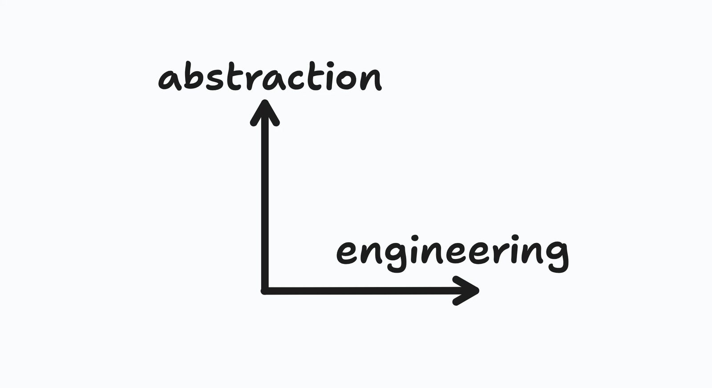

(Human) skills for software jobs 2026 edition
What should beginners learn to be good developers now? No one knows
I gave a talk at the university yesterday where I talked about my career so far to the other students that were sitting where I was a decade ago. One of the questions asked was the big question everyone seems to be asking: what skills should beginners/students learn now that coding is done by AI?
And I don't know how to answer that, of course, and things are changing super fast. But I tried explaining my current mental model for it, and that got me thinking more, and the conversation with students and professors, as always, are great food for thought.
I think there are two axes1 Not sure if they should be axes, but I like the idea that abstraction is up above and engineering is the line moving forward. And this is about my mental model, so I drew axes. of skills: abstraction and engineering.

Abstraction is the skill of reasoning about things without having to be aware of details, or understanding concepts without relying too much on concrete and full examples. Category theory is probably the most extreme example of abstraction, the hardcore bit.
There's also another shape that I learned to appreciate a lot: being able to assist and communicate with areas different than yours, that you don't fully understand, but you can make an abstract mental model of and use it to navigate plans and conversations. I've worked with product owners that had this ability and it's way better than working with someone that keeps repeating they "don't really understand the tech, but ...". We know they don't understand the tech, we just need them to be able to do their jobs without understanding details. Abstracting.
Engineering is the term I thought for capturing the skill of building structure. The trend of saying "every developer is now a manager of agentic teams" is turning into "you don't build the software, you build the factory that builds the software", which seems better to me. While building software was maybe a mix of engineering and creativity, building a factory sounds way more like engineering. Thinking about the processes, the triggers, how the automations are combined, quality gates, sampling results, measuring performance and auto-improving are all hard and interesting tasks, that are combined into this new skill I'm calling engineering for the sake of this blog.
Are agents more capable of one than the other? Are they more likely to automate one job or the other? No predictions from me! As I told the students yesterday: it's really hard to predict the future, specially right now, so you might as well choose what you like the most. In my very individual experience, liking things makes you more likely to succeed at them (and enjoy the big chunk of your life you'll spend using these skills).
If you didn't guess which skill I have embraced for my own until now, I'll tell you: it's definitely abstraction. If I do my job right, Quint will become the go-to tool for abstraction and hopefully teach the skill to more people, including beginners and students. Abstraction has always been my thing, so be aware that my opinions are partial. And probably too abstract.